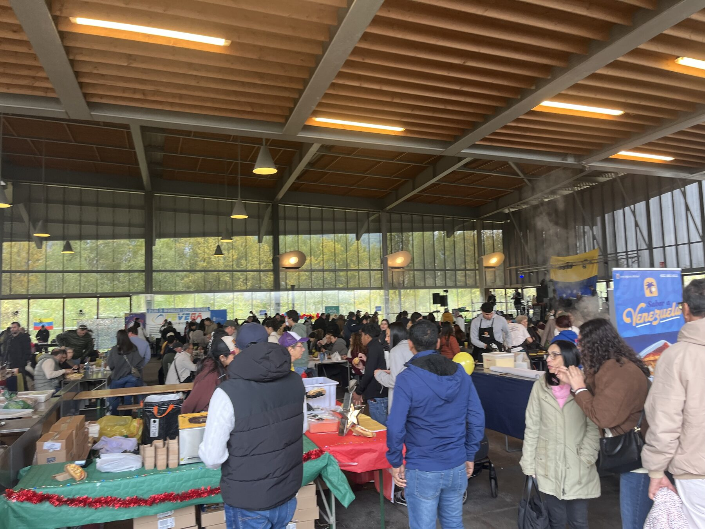
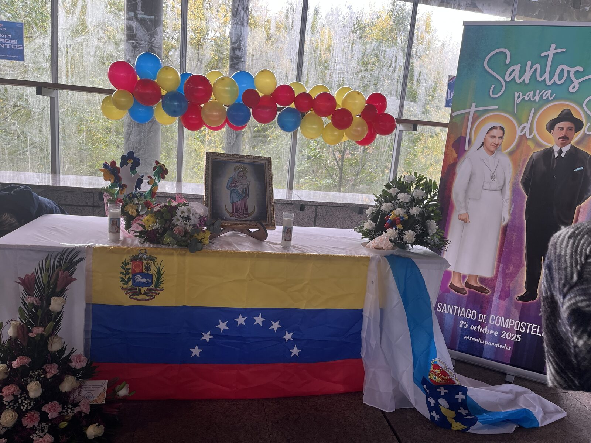
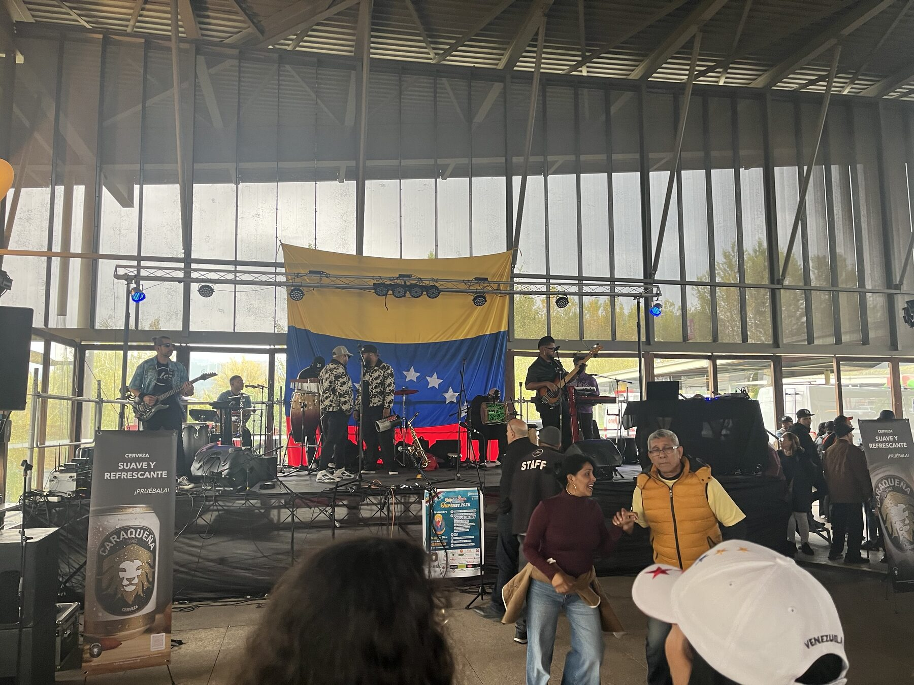
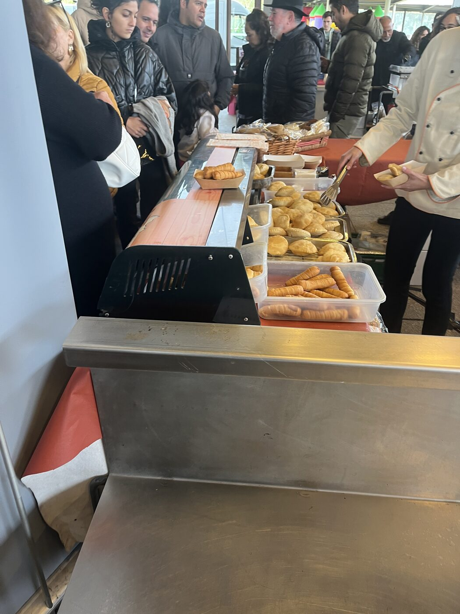

// migración · música · notas de campo
Venezolanos en Galicia: qué pasa cuando la Virgen de la Chinita llega a Ourense

El 9 de noviembre de 2025 viajé a Ourense con la grabadora, el cuaderno y demasiada teoría en la cabeza. Llevaba meses entrevistando a venezolanos residentes en Galicia sobre su relación con la música: cómo la usan, qué les activa y qué lugar ocupa en la vida cotidiana lejos de casa. Esta vez no iba a registrar una conversación, sino un acontecimiento: la Feria de la Chinita, la gran celebración identitaria del Zulia, reubicada en el Campo da Feira de Ourense por la comunidad venezolana asentada en Galicia.
La Feria de la Chinita
Para quien no esté familiarizado con ella, la Feria de la Chinita ocupa en el imaginario zuliano un lugar comparable, salvando todas las distancias, al que ocupan los Sanfermines en Pamplona. Con una diferencia decisiva: aquí el centro no es un encierro, sino una Virgen. La Virgen de Chiquinquirá, conocida popularmente como la Chinita, es la patrona de Maracaibo y del estado Zulia, y su festividad del 18 de noviembre convoca música de gaita zuliana, actos religiosos, béisbol, encuentro social y una densidad afectiva que muchos maracuchos describen como irrepetible.
Cuando el éxodo venezolano se intensificó a partir de 2015, esa festividad también emigró con quienes tuvieron que irse. Hoy existen ferias de la Chinita en Madrid, Miami, Bogotá o Santiago de Chile. Galicia forma ya parte de esa geografía afectiva expandida: no como simple réplica del original, sino como una versión situada, producida en condiciones nuevas, con otra demografía, otro clima y otra trama de relaciones.
Lo que encontré en Ourense
Llegué al mediodía y lo primero que me llamó la atención no fue la música ni la comida, aunque ambas estaban allí desde el primer minuto. Fue algo más difícil de nombrar: la imposibilidad de distinguir con claridad, a simple vista, quiénes eran venezolanos y quiénes no. Había mesas con familias de acentos mezclados, parejas mixtas con hijos nacidos aquí, amistades gallegas que habían acudido por vínculo o por curiosidad. La frontera étnica, tan rígida en algunos debates sobre migración, aparecía allí como una línea porosa.
En un lateral del recinto se había dispuesto un pequeño altar con la imagen de la Virgen de Chiquinquirá, referencias a los beatos venezolanos José Gregorio Hernández y María de San José, y una mención a Santiago de Compostela. En una esquina, casi discreta, descansaba una pequeña bandera gallega. Ese detalle me pareció el símbolo más honesto de lo que estaba ocurriendo: no una tradición congelada, sino una composición nueva, hecha de continuidad, desplazamiento y convivencia.

La autenticidad era la pregunta equivocada
Antes de ir a Ourense había hablado con varios venezolanos sobre la feria. Las valoraciones divergían. Para algunos era un espacio genuino de comunidad, un lugar de encuentro y de venezolanidad compartida. Para otros, en cambio, faltaba algo esencial: la dimensión litúrgica, la misa, la entronización de la Virgen que en Maracaibo da sentido pleno al 18 de noviembre. Sin eso, me decía uno de ellos, todo corría el riesgo de parecer una fiesta comercial.
La divergencia me interesó precisamente porque no era una discrepancia sobre hechos, sino sobre criterios. ¿Qué hace que una celebración sea auténtica? ¿La fidelidad al ritual de origen? ¿La intensidad del vínculo afectivo? ¿El número de venezolanos presentes? ¿La continuidad religiosa? Empecé a sospechar que la pregunta estaba mal formulada. No porque la autenticidad no importe, sino porque en contextos migratorios suele presentarse como un falso dilema: o reproducción fiel o pérdida. Lo que vi en Ourense apuntaba a otra cosa. No era copia ni traición. Era rearticulación.

Música que no evoca: construye
Una de las hipótesis que orienta esta investigación es que la música no actúa únicamente como reflejo de la identidad. Hace algo más fuerte: produce el espacio en el que esa identidad se vuelve habitable, aunque sea durante unas horas. Cuando sonaron las primeras gaitas en Ourense, la operación no fue simplemente nostálgica. No se trataba de recordar Maracaibo desde la distancia, sino de ensamblarla provisionalmente allí mismo, en el presente.
El frío de noviembre, las cristaleras del recinto, las mesas de comida, la cerveza Caraqueña, la bandera venezolana detrás del escenario y la circulación de familias y amistades componían un mismo dispositivo. Eso es lo que me interesa documentar en contextos de migración: cómo la música no solo acompaña la pertenencia, sino que la organiza, la intensifica y la hace visible en el espacio.
La música, en contextos migratorios, no es solo memoria. También es infraestructura afectiva: produce pertenencia mientras dura.

Una frase que sigue trabajando
Semanas después de la feria volví a pensar en uno de mis informantes: periodista, abogado y locutor en Venezuela durante décadas. En Galicia había trabajado como repartidor de paquetería y carretillero. La frase con la que describía su trayectoria era brutal en su sencillez: aquí, inevitablemente, se empieza desde cero. Y, sin embargo, cuando hablaba de la música, aparecía otra escala de sentido.
«El cuatro es, en sí mismo, un país que se llama Venezuela, pero también es América.»
Esa formulación condensa buena parte de lo que intento entender. La pérdida material del desclasamiento y la integridad simbólica del instrumento pueden coexistir en la misma persona y en la misma frase. La música no compensa la precariedad, y sería ingenuo pedirle eso. Pero tampoco es decorativa. Hace algo. Este trabajo intenta precisamente describir ese hacer sin romanticismos, atendiendo a lo que organiza, a lo que sostiene y también a lo que deja en suspenso.
Nota de investigación
Este texto forma parte de una investigación doctoral en curso sobre música, identidad y comunidades migrantes latinoamericanas en Galicia. El artículo académico derivado de esta observación de campo se encuentra actualmente en proceso de escritura.